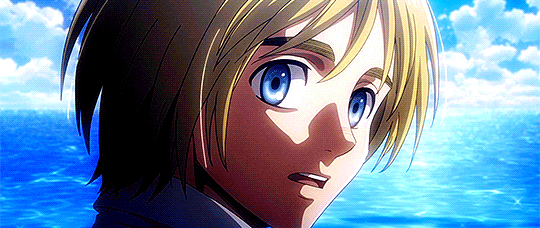
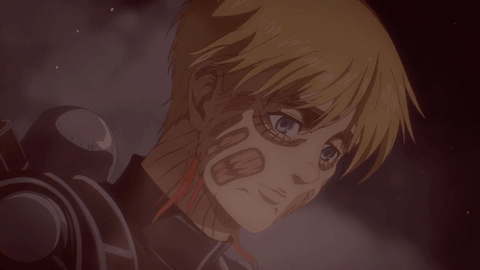
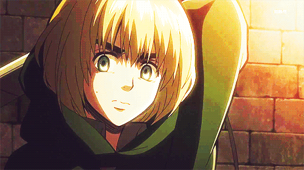

CURIOSIDADES



¿SABIAS QUE...?
Un Nombre con Propósito
"Armin" significa "guerrero" o "soldado", mientras que "Arlert" suena como “alerta” en inglés.
La Mente del Autor
Isayama lo creó como la representación de la sabiduría en el trío protagonista, mientras que Eren es la voluntad y Mikasa la fuerza.
Pacifista por Naturaleza
Armin nunca buscó pelear, pero enfrentó sus miedos por proteger lo que amaba y cumplir sus sueños.
Genio Táctico
Es uno de los más inteligentes del Cuerpo de Exploración, planeando misiones cruciales, como la captura del Titán Femenino.
La Elección Dolorosa
Fue elegido para heredar el poder del Titán Colosal en lugar de Erwin, en una de las decisiones más difíciles y emotivas.
Fuego y Trauma
Después de causar gran destrucción como Titán Colosal, desarrolló un miedo profundo al fuego, marcándolo emocionalmente.
Amante del Conocimiento
Su pasión por los libros lo llevó a soñar con lugares más allá de los muros: mares, desiertos y campos de hielo.
El Sueño Cumplido
Armin fue el primero del trío en ver el mar, un momento que selló su espíritu soñador y su esperanza en la libertad.